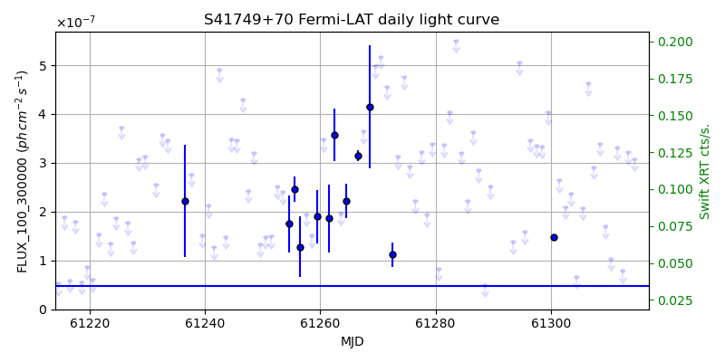
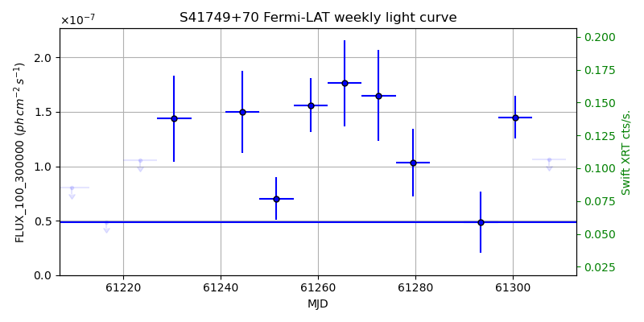
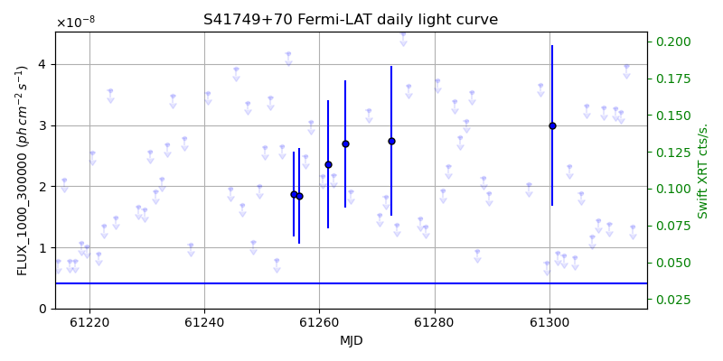
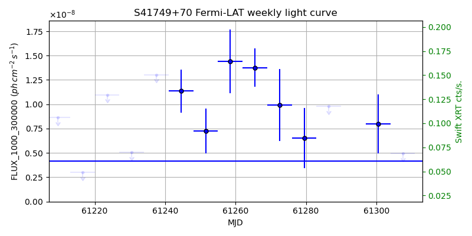

LAT Lightcurve site: https://fermi.gsfc.nasa.gov/ssc/data/access/lat/msl_lc/source/S4_1749p70
Swift site: https://www.swift.psu.edu/monitoring/source.php?source=S41749+70
NED: Query
Time of last update of this page: UT: 2026-10-02 15:24 (MJD: 61315.642)
| Property | Value |
|---|---|
| R.A. | 17:48:32.88 |
| Dec. | 70:05:49.2 |
| z | 0.770 |
| 3FGL SpectrumType | PowerLaw |
| 3FGL PL Index | 2.06 |
| 3FGL Flux_100_300000 | 4.83e-08 1 / (s cm2) |
| 3FGL Flux_1000_300000 | 4.16e-09 1 / (s cm2) |
| 3FGL Flux >200 GeV | 1.47e-11 1 / (s cm2) |
| 3FGL Extrap. Crab >200 GeV | 0.06 |
| 3FGL Flux After EBL Absorption >200GeV | 5.32e-13 1 / (s cm2) |
| 3FGL EBL Crab Fraction >200GeV | 0.00 |

| MJD | dMJD | Flux | dFlux | Frac3FGL | FracCrab>200GeV | EBLFracCrab>200GeV |
|---|---|---|---|---|---|---|
| 61310.50 | 0.50 | 1.04e-07 | 0.00e+00 | 0.00 | 0.00 | 0.00 |
| 61311.50 | 0.50 | 3.31e-07 | 0.00e+00 | 0.00 | 0.00 | 0.00 |
| 61312.50 | 0.50 | 7.92e-08 | 0.00e+00 | 0.00 | 0.00 | 0.00 |
| 61313.50 | 0.50 | 3.22e-07 | 0.00e+00 | 0.00 | 0.00 | 0.00 |
| 61314.50 | 0.50 | 3.08e-07 | 0.00e+00 | 0.00 | 0.00 | 0.00 |

| MJD | dMJD | Flux | dFlux | Frac3FGL | FracCrab>200GeV | EBLFracCrab>200GeV |
|---|---|---|---|---|---|---|
| 61279.50 | 3.50 | 1.03e-07 | 3.10e-08 | 2.14 | 0.13 | 0.00 |
| 61286.50 | 3.50 | 2.51e-07 | 0.00e+00 | 0.00 | 0.00 | 0.00 |
| 61293.50 | 3.50 | 4.89e-08 | 2.82e-08 | 1.01 | 0.06 | 0.00 |
| 61300.50 | 3.50 | 1.45e-07 | 1.97e-08 | 3.00 | 0.19 | 0.01 |
| 61307.50 | 3.50 | 1.06e-07 | 0.00e+00 | 0.00 | 0.00 | 0.00 |

| MJD | dMJD | Flux | dFlux | Frac3FGL | FracCrab>200GeV | EBLFracCrab>200GeV |
|---|---|---|---|---|---|---|
| 61310.50 | 0.50 | 1.38e-08 | 0.00e+00 | 0.00 | 0.00 | 0.00 |
| 61311.50 | 0.50 | 3.28e-08 | 0.00e+00 | 0.00 | 0.00 | 0.00 |
| 61312.50 | 0.50 | 3.22e-08 | 0.00e+00 | 0.00 | 0.00 | 0.00 |
| 61313.50 | 0.50 | 3.96e-08 | 0.00e+00 | 0.00 | 0.00 | 0.00 |
| 61314.50 | 0.50 | 1.33e-08 | 0.00e+00 | 0.00 | 0.00 | 0.00 |

| MJD | dMJD | Flux | dFlux | Frac3FGL | FracCrab>200GeV | EBLFracCrab>200GeV |
|---|---|---|---|---|---|---|
| 61279.50 | 3.50 | 6.52e-09 | 3.10e-09 | 1.57 | 0.10 | 0.00 |
| 61286.50 | 3.50 | 9.81e-09 | 0.00e+00 | 0.00 | 0.00 | 0.00 |
| 61293.50 | 3.50 | 2.08e-08 | 0.00e+00 | 0.00 | 0.00 | 0.00 |
| 61300.50 | 3.50 | 8.01e-09 | 3.03e-09 | 1.93 | 0.12 | 0.00 |
| 61307.50 | 3.50 | 4.93e-09 | 0.00e+00 | 0.00 | 0.00 | 0.00 |
--------------------------------------------------------- Using user-supplied coords: 17:48:32.88 70:05:49.2 2000 --------------------------------------------------------- FLWO UT night of: 2026-10-03 Local Sid. @ Midnight: 00:24 Sunset (-15.0) (local, UT): 19:14 02:14 Sunrise (-15.0) (local, UT): 05:12 12:12 Moonrise (local, UT): 22:48 05:48 Moonset (local, UT): Moon phase: 0.53 --------------------------------------------------------- AzTime LSID UT Obj_el Obj_az Mn_el Mn_az Sep. --------------------------------------------------------- 19:14 19:37 02:14 48.7 346.3 -28.5 20.1 82.9 19:44 20:07 02:44 47.0 343.4 -26.2 26.7 82.9 20:14 20:37 03:14 45.1 341.1 -23.2 32.8 82.9 20:44 21:07 03:44 42.9 339.2 -19.6 38.5 82.9 21:14 21:37 04:14 40.6 337.8 -15.7 43.6 82.9 21:44 22:07 04:44 38.1 336.9 -11.3 48.4 82.8 22:14 22:37 05:14 35.6 336.5 -6.5 52.7 82.8 22:44 23:07 05:44 33.0 336.4 -0.8 56.7 82.8 23:14 23:37 06:14 30.5 336.8 3.8 60.4 82.7 23:44 00:07 06:44 28.0 337.4 9.1 63.9 82.7 00:14 00:38 07:14 25.6 338.4 14.6 67.1 82.6 00:44 01:08 07:44 23.3 339.6 20.3 70.2 82.6 01:14 01:38 08:14 21.1 341.1 26.1 73.1 82.6 01:44 02:08 08:44 19.2 342.8 32.1 76.0 82.6 02:14 02:38 09:14 17.4 344.8 38.1 78.8 82.5 02:44 03:08 09:44 15.8 346.9 44.2 81.7 82.5 03:14 03:38 10:14 14.5 349.1 50.3 84.8 82.5 03:44 04:08 10:44 13.4 351.5 56.5 88.1 82.5 04:14 04:38 11:14 12.6 354.0 62.7 91.9 82.5 04:44 05:08 11:44 12.1 356.6 68.9 96.9 82.5 05:12 05:37 12:12 11.9 359.1 74.7 103.8 82.5 --------------------------------------------------------- Source never above horizon of 55.0 deg. Dark hours >55 deg.: 0.00